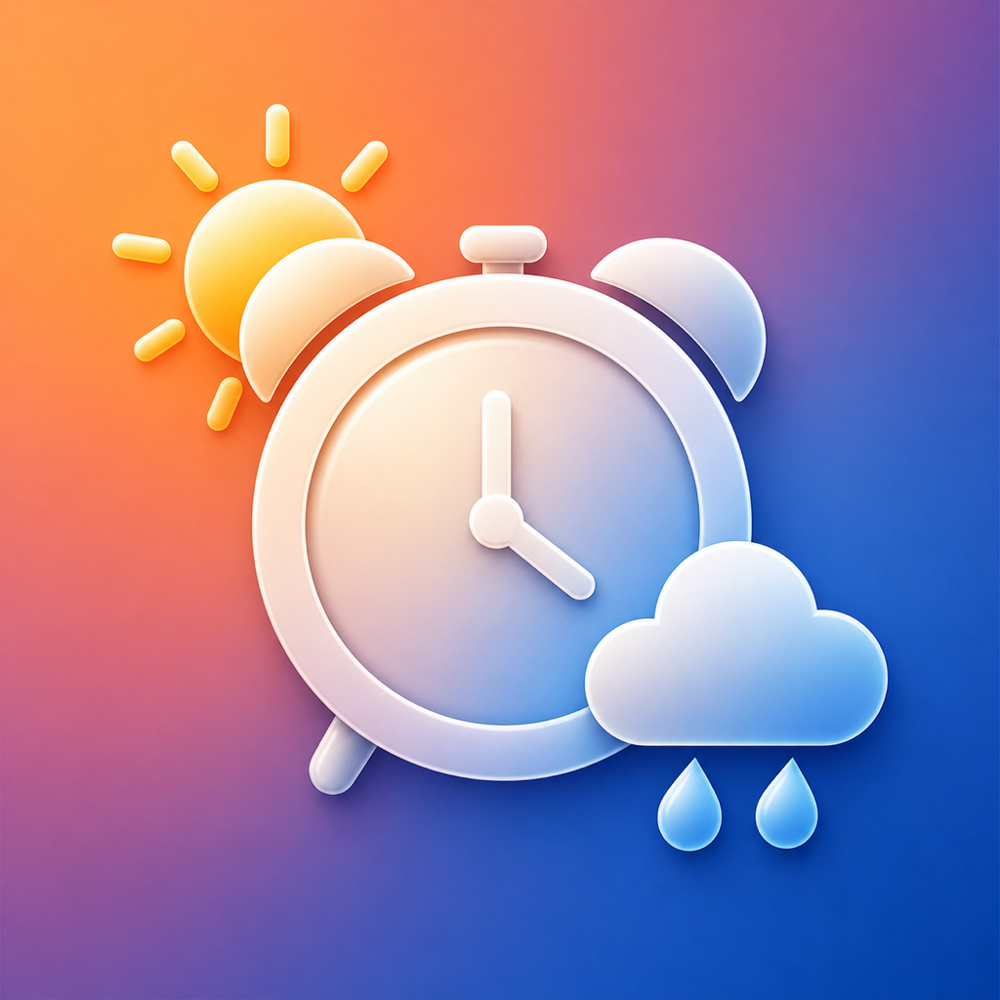

雨晴闹钟
根据通勤时段的降雨预报，在雨天和晴天两套时间之间自动选择。
使用帮助
- 设置“有雨”和“无雨”两套响铃时间。
- 选择需要重复的星期。
- 允许定位与闹钟权限，然后打开页面顶部的总开关。
常见问题
天气没有更新
请确认定位权限和网络连接正常，然后点按天气卡片右侧的刷新按钮。
闹钟没有创建
请前往系统设置，确认已允许雨晴闹钟使用闹钟权限。
联系支持
如遇到问题，请在 GitHub Issues 中说明设备型号、系统版本和复现步骤。

根据通勤时段的降雨预报，在雨天和晴天两套时间之间自动选择。
天气没有更新
请确认定位权限和网络连接正常，然后点按天气卡片右侧的刷新按钮。
闹钟没有创建
请前往系统设置，确认已允许雨晴闹钟使用闹钟权限。
如遇到问题，请在 GitHub Issues 中说明设备型号、系统版本和复现步骤。